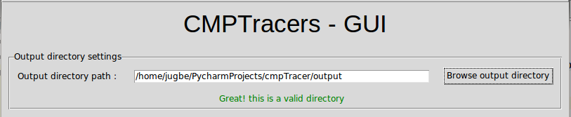
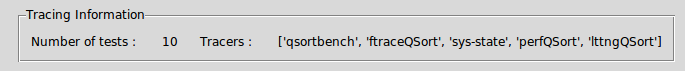
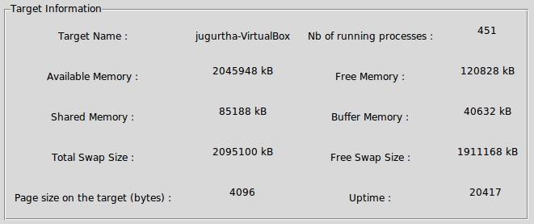
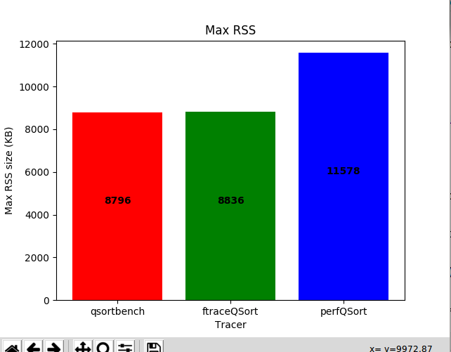
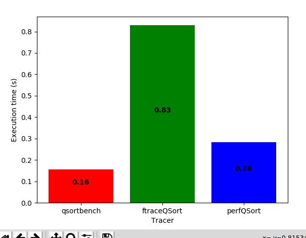
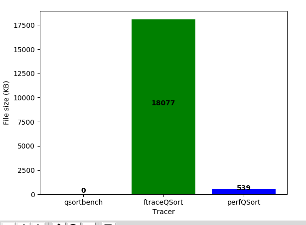
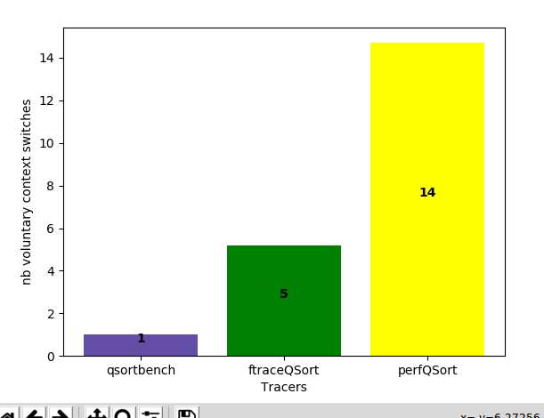
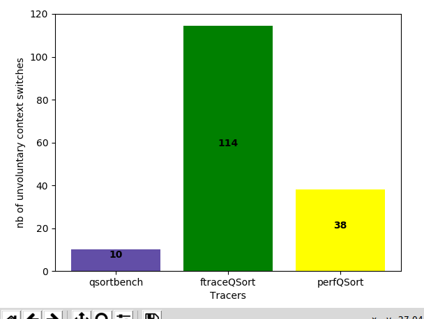
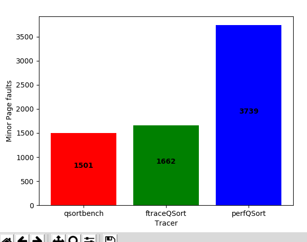

Usage of CMPTracers - GUI
CMPTracers - GUI is intuitive, all We need is to locate the output directory generated by the .... as shown below.

Gui layout
| Tracing Information |

Tracers detects the tracers on which the experiment was made.
|
|---|---|
| Target Information |

|
| Control buttons |






|